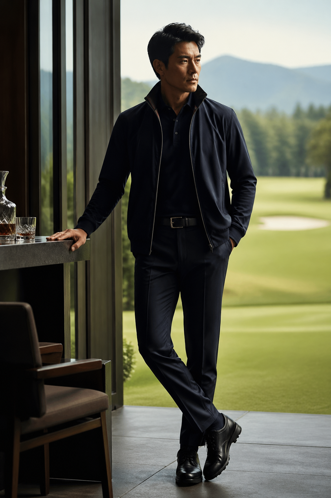

一点もの
量産ではなく、同じものがない一着。選ばれた服に、もう一度意味を与える。

ONE OF ONE REMAKE STYLE
世界に一着の服で、ゴルフのあとまで整える。
ゴルフ場では動ける服がいる。けれど、ラウンド後の食事や会話の場では、 いかにもゴルフウェアのままでは物足りない。
だから18+1は、新しく大量に作るのではなく、すでに存在している服を見立て直す。 すでに存在している服に、ゴルフにもその後にも着られる役割を与え直す。
18ホールで終わりではない。その先に、もうひとつ楽しみがある。 その考えから、18+1は生まれました。
ゴルフは、スコアだけで終わらない。ラウンド後の会話、食事、 移動の時間まで含めて、その日の体験になる。楽しみがひとつ残っていれば、 人は少し穏やかでいられる。18+1は、その余白まで服で編集します。
量産ではなく、同じものがない一着。選ばれた服に、もう一度意味を与える。
選ばれた服の中から、ゴルフにもその後にも使える素材・動き・見え方を見極める。
18ホールの先に、食事や会話の楽しみをひとつ残す。服は、その時間まで連れていく。
SELECTED & RE-EDITED BY
SUPREME、Y-3、国内セレクトブランドなど、一般的なゴルフブランドではない服の中から、 西岡慎也が一着ずつ見立てます。
選ぶのは、ブランド名だけではありません。素材、シルエット、動きやすさ、 その後の場に馴染む空気感まで含めて、世界に一着の18+1へ再編集します。
ただおしゃれな服では、ゴルフには向かない。けれど、機能だけの服では、 その後の時間に馴染みにくい。18+1は、その間にある一着を見立てます。
ゴルフの後に、食事がある。会話がある。そこでの印象まで含めて、 その日のスタイルになる。18+1は、プレー後の楽しみまで考えます。
胸元に、静かな主張を。服本来の雰囲気を壊さないサイズで入れる。
後ろ姿にも、さりげない印を。主張よりも、余白を残すロゴ使い。
18+1 / EIGHTEEN PLUS ONE
世界に一着の服で、ゴルフ後の時間まで整える。
18+1は、既製品ではない楽しみの余白です。